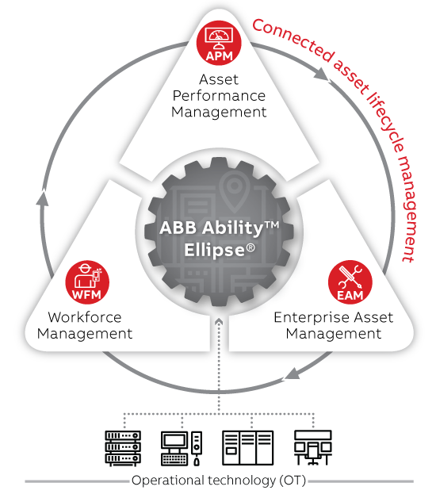
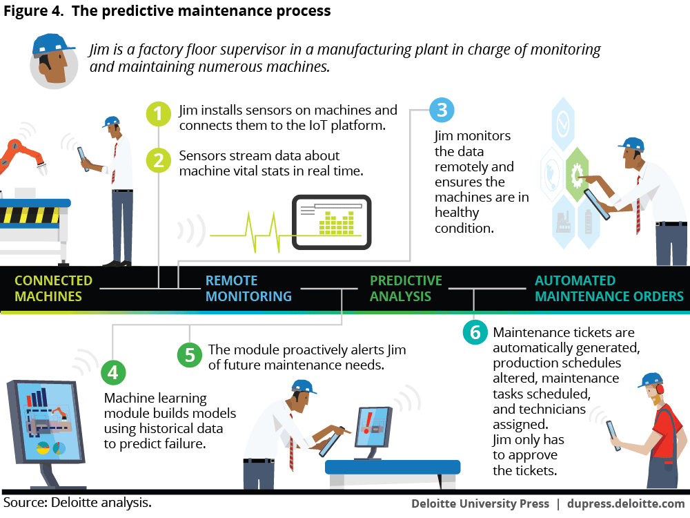

First off, I would like to give you a little introduction about the digital approach in enterprise software on industry. The Asset Performance Management or APMs are taking great importance on this, their benefits are reducing costs of corrective maintenance, logistics, production, equipment acquiring etc.
 Aproach of ABB: connected asset lifecycle management (CALM)In Peru and in Latin-American countries are a breed solutions since to MYPES and to big Companies. Some years ago, to have a kind of this software were considered a competitive advantage because of the high price. However, acquire enterprise software now is accessible for every small and big company.
So, what this software is for? A simple example is when your system, after a quantitative and qualitative analysis of historical data, detect that a cistern or maybe an electric transformer is the most critical asset and it is recommended to check its hydrogen concentration or humidity level.
Here the importance of keeping historical data becomes relevant. It helps to act before a crisis would occur, it means saving money with a next level of predictive maintenance. Going to the point, now it is possible to install a lot of digital sensors on each asset (transformers, circuit breakers, motors, etc.). Besides of databases, data of SCADA, inspections etc. which feed models that return health condition of the asset. In addition, there is more online data of other machines or asset of other brands. Here the machine learning, as a part of the artificial intelligence, is able to learn from this models with big data and predict when a machine will not works normally before it happens.
The results could be: recommendation to do analysis of dissolved gases, TTR Tests, etc. All this procedures under the respective norm. In this case the ISO 55000.
ISO 55000 & PAS 55 provide "the optimal combination of costs, risks related to assets, performance and the status of assets and asset systems throughout the life cycle."Since its creation in 2004 (Revision and Reissue in 2008), PAS 55 has defined the requirements for good practices in the management of physical assets.The new ISO 55000 standard, supported by PAS 55, is the present and future of asset management.
The ISO 55000 is therefore composed of three standards that complement each other:
ISO 55000: Asset Management (general information, principles and terminology)
ISO 55001: Asset Management (requirements)
ISO 55002: Asset Management (guidelines on the application of ISO 55001)
Source: ABB , Scheneider Electric , PMMlearning.